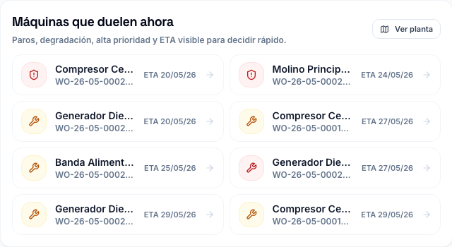
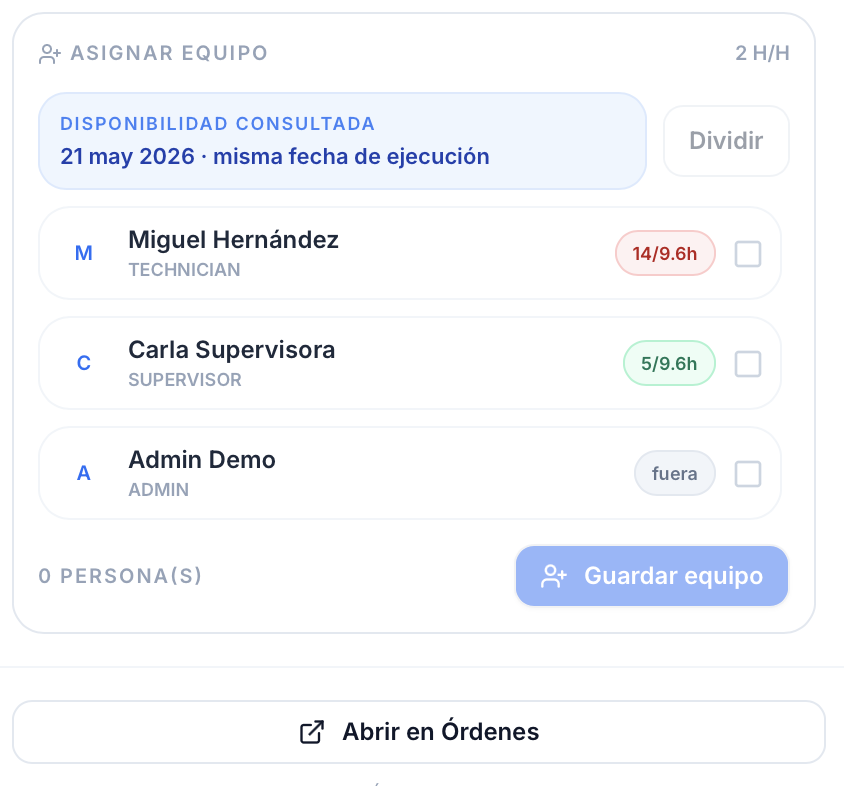
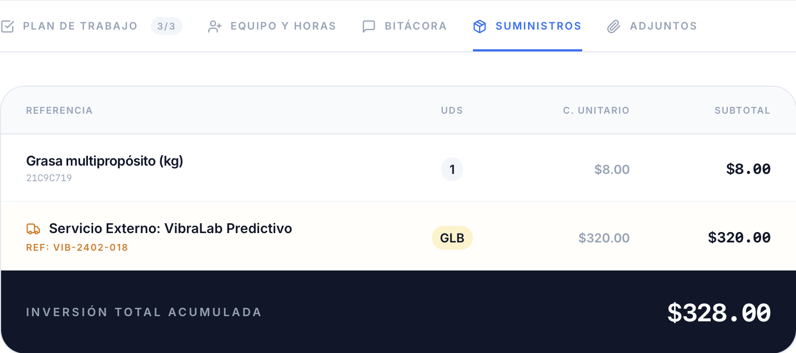
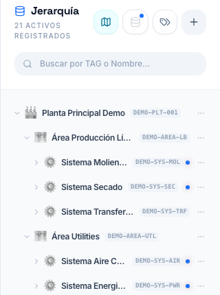
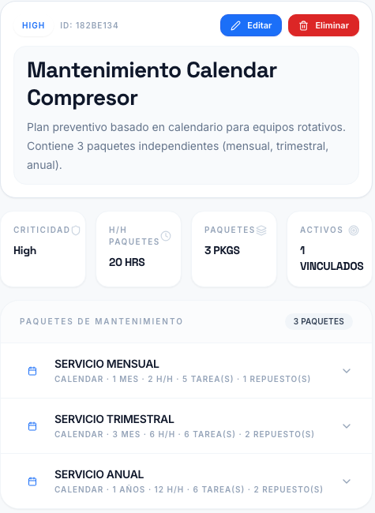
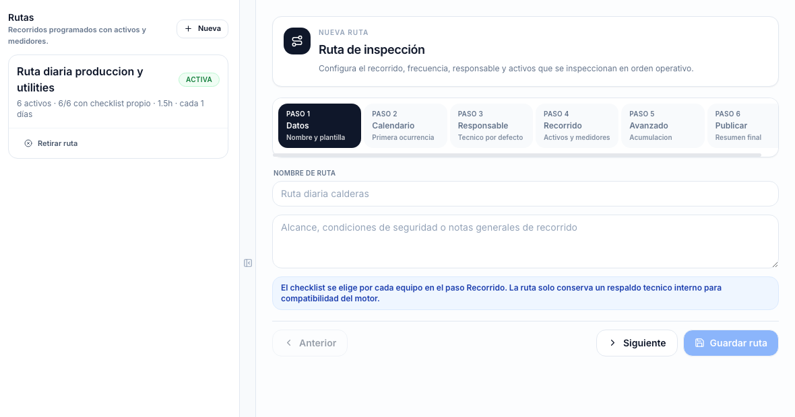
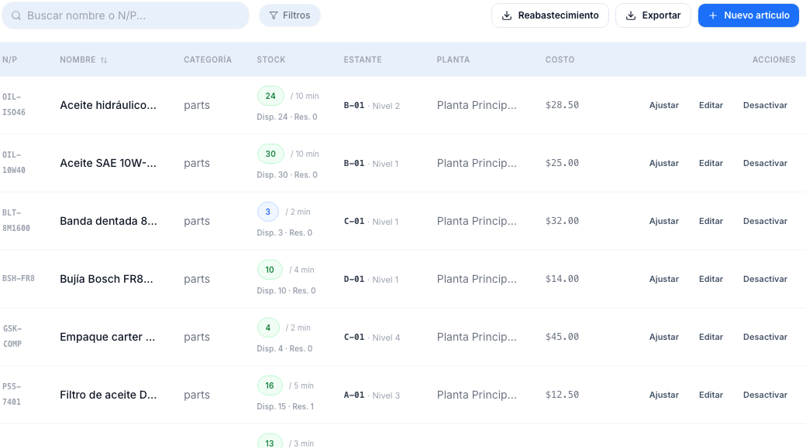
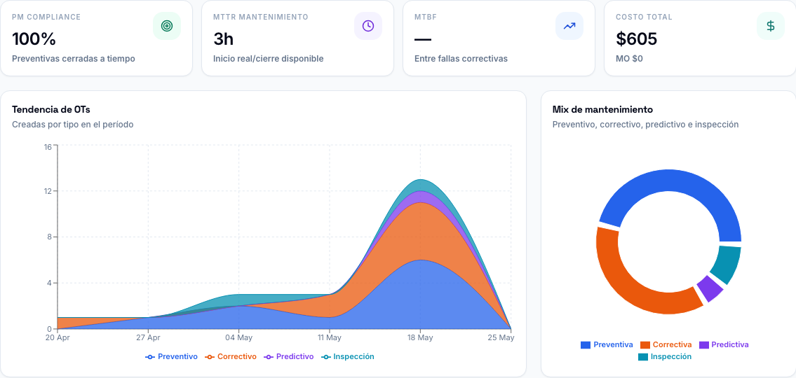

Si tu mantenimiento vive en chats, Exceles y memoria, cada paro empieza con la misma pregunta: “¿quién sabe qué pasó?”.
VersaMaint centraliza el trabajo diario para que el historial no dependa de la persona que justo hoy no está.
Sinergia Operativa: VersaMaint × APEX
VersaMaint convierte fallas, activos, preventivos, repuestos y evidencias en una sola fuente de verdad. Tu equipo deja de depender de memoria, fotos perdidas y Exceles que nadie actualizó. Y si no tienes tiempo para levantarlo bien, la empresa hermana de ingeniería de campo APEX entra a planta, ordena la información y deja el sistema caminando contigo.

Decisión rápida
VersaMaint reúne lo que normalmente se dispersa en urgencias: activos, órdenes, calendario preventivo, inventario, inspecciones y métricas. La promesa es simple: que la próxima falla encuentre historial, responsable y decisión.
VersaMaint centraliza el trabajo diario para que el historial no dependa de la persona que justo hoy no está.
Activos, OTs, preventivos reales, planificación, stock, inspecciones y RCA en un flujo que el técnico entiende rápido.
Starter incluye 6 usuarios con acceso completo y reportadores ilimitados gratuitos para que toda la planta pueda alertar fallas sin costo.
VersaMaint te da el software; APEX entra a planta cuando necesitas levantar activos, ordenar preventivos y arrancar sin improvisar.
Ubicamos dónde se pierde dinero, qué máquinas despiertan a todos y qué parte del proceso hace que el equipo vuelva al chat.
Te mostramos cómo VersaMaint Starter ($129/mes) ordena el día a día sin contratos forzosos ni una implementación que se coma el año.
Si tu jefe de mantenimiento ya está saturado, APEX asume la carga: levantamos activos, cargamos preventivos y configuramos todo.
No te dejamos con pantallas vacías. Revisamos disciplina, cierres, preventivos y costos para que el sistema produzca decisiones.
Somos ingenieros de planta. Si faltan manos, ejecutamos mantenimiento eléctrico, termografías, planos o auditorías energéticas.
VersaMaint cubre el ciclo operativo de tu día a día: activos, órdenes de trabajo, planes preventivos, solicitudes, existencias y costos. Está diseñado para que el técnico lo use porque le ahorra vueltas, no porque alguien lo obligó. Y cuando tu equipo está demasiado saturado para levantar la información, APEX entra al piso de planta y convierte el desorden en estructura.
La trampa del software Enterprise
Los gigantes de software corporativo te venden plataformas ultra-complejas que requieren meses de implementación y miles de dólares al mes. ¿El resultado? Un sistema tan pesado que el equipo lo evita justo cuando más debería usarlo. La falla vuelve al chat, el preventivo vuelve al Excel y la gerencia vuelve a preguntar por qué se repitió el paro. VersaMaint Starter te da control desde $129/mes.
Costo mensual predecible y justo. Starter equivale a solo $21.50 por usuario pago incluido.
Las integraciones complejas y las promesas predictivas se ven bien en una presentación de ventas corporativa. Pero en el piso de planta de Latinoamérica, la realidad es otra:
Diseñado en la trinchera
VersaMaint no nació en un cubículo corporativo desconectado de la planta. Fue creado por ingenieros de mantenimiento salvadoreños que han estado frente a una máquina detenida a las 2 AM, con producción esperando respuesta y gerencia pidiendo disponibilidad.
Sabemos lo que pesa buscar un repuesto crítico que el sistema marcaba disponible y descubrir que nadie registró la salida. Sabemos lo que cuesta perder el historial porque la OT quedó en la memoria de alguien. Por eso hablamos tu mismo idioma.
Nos enfocamos obsesivamente en quitar fricción para el técnico que está frente a la máquina. Si reportar o cerrar una OT toma más de tres toques, el sistema no sirve.
Interfaz limpia para que el técnico no sienta que el sistema le roba tiempo frente a la máquina.
Toda la planta puede reportar fallas sin convertir cada aviso en un usuario pagado.
Pagas por escala, usuarios y almacenamiento; no por desbloquear piezas esenciales del mantenimiento.
Te atiende gente que entiende paros, repuestos, auditorías, prioridades y presión de producción.
Características del software
Una mirada directa a los flujos que sostienen el mantenimiento diario: activos, OTs, agenda, recursos, inventario, métricas y análisis RCA.

Antes de asignar una OT, VersaMaint consulta disponibilidad, horas comprometidas y rol de cada persona. Así la planificación deja de ser una apuesta visual y se convierte en una decisión operativa.
Repuestos, servicios externos y costo total quedan dentro del expediente. Esto convierte cada orden cerrada en memoria financiera para compras, presupuesto y decisiones de confiabilidad.

La jerarquía evita que el historial se disperse entre nombres parecidos. Planta, área, sistema y equipo quedan ordenados para que el técnico encuentre rápido dónde registrar la evidencia.

El mantenimiento preventivo deja de ser una lista genérica. Cada paquete puede tener su frecuencia, mano de obra, actividades y repuestos planeados para que la OT nazca con intención.

El recorrido, el checklist, el responsable y los activos quedan amarrados en una sola ruta. Solo una anomalía o una lectura fuera de tolerancia dispara acción correctiva.

Stock actual, mínimo, ubicación y costo conviven en la misma lectura. La bodega deja de ser una hoja aislada y empieza a conectarse con el trabajo real de mantenimiento.

Tendencias, mix de mantenimiento, costo total y cumplimiento PM se leen juntos. Sirve para defender recursos, detectar deriva operativa y mostrar avance sin maquillar el problema.

Un supervisor necesita saber dónde intervenir hoy. El tablero separa urgencia, criticidad y fecha objetivo para que el equipo no pierda la mañana buscando prioridades.
Comparativa comercial anónima
Frente a CMMS corporativos y suites más pesadas, VersaMaint mantiene el costo bajo control y reduce la curva de aprendizaje. La comparación no es solo precio: es si tu equipo lo va a usar cuando la operación esté caliente.
Otros te venden el CMMS por pedazos. Nosotros te damos la plataforma completa desde el primer momento.
Cálculo referencial sobre usuarios pagos equivalentes. Los requesters de VersaMaint no figuran como asientos de pago. Las opciones se muestran anonimizadas para comparar costo, complejidad y adopción sin identificar proveedores concretos.
Planes VersaMaint
Todos los planes incluyen el núcleo del CMMS: activos, órdenes de trabajo, preventivos, solicitudes, inventario, adjuntos, roles y analítica operativa. No necesitas una gran implementación para empezar: VersaMaint está pensado para adoptarse de forma natural, y APEX queda como apoyo opcional si el día a día no deja espacio.
En VersaMaint no escondemos capacidades esenciales detrás de capas comerciales innecesarias. Activos, órdenes, preventivos, inventario, solicitudes, costos, evidencias e indicadores forman parte del núcleo operativo desde el inicio. La diferencia entre planes está en escala, usuarios, almacenamiento y acompañamiento, no en limitar lo que tu mantenimiento necesita para funcionar bien.
Starter es una entrada seria para una planta pequeña. Business incluye el equipo operativo completo, Scale triplica esa capacidad y el almacenamiento crece con la operación: 25 GB, 150 GB, 300 GB y Custom a la medida.
Política de horas incluidas
Las horas incluidas en el plan están pensadas para resolver dudas de uso, orientar la configuración inicial, explicar buenas prácticas dentro de VersaMaint y recoger oportunidades de mejora del producto según tu operación. Este acompañamiento ayuda a que el equipo aproveche mejor el CMMS, pero no reemplaza un servicio de consultoría o implementación APEX. Actividades como levantamiento de activos, diseño de planes de mantenimiento, diagnósticos técnicos, capacitación formal por rol, trabajos de ingeniería o rediseño de procesos se cotizan por separado bajo un alcance específico.
Sinergia APEX × VersaMaint
En muchas plantas de Latinoamérica, el responsable de mantenimiento sabe qué debería hacer: ordenar activos, depurar preventivos, medir paros, controlar repuestos y capacitar al equipo. Pero el día a día lo consume. APEX existe para tomar esa carga estratégica, convertirla en método y dejar una operación que no dependa de heroísmo diario.
Potencial de mejora en disponibilidad de activos cuando la función de mantenimiento se digitaliza con proceso.
Rango observado por McKinsey para reducción de costos de mantenimiento en transformaciones digitales.
Siemens advierte que el downtime puede golpear fuerte incluso a fabricantes medianos y pequeños.
La calidad de descripciones en OTs define si el historial sirve para mejorar preventivos o solo archivar problemas.
Estados, prioridades, aprobaciones, responsables, evidencia mínima, cierre técnico y reglas de escalamiento.
Jerarquías mantenibles para que el equipo encuentre el equipo correcto y los reportes tengan sentido.
Rutinas, frecuencias, criticidad, ventanas de ejecución y criterios para ajustar el plan con datos reales.
Sesiones para técnicos, supervisores, planners, almacén y gerencia, con lenguaje operativo y casos reales.
Evaluación de gestión actual, brechas, disciplina de datos, inventario, preventivos y capacidad del equipo.
Acompañamiento para que el sistema no se quede como una base vacía, sino como una forma de trabajar.
Cómo se sostiene
APEX trabaja en ciclos: diagnóstico, diseño, piloto, adopción, medición y ajuste. Cada ciclo deja reglas, responsables, indicadores y una siguiente revisión. La meta no es hacer una implementación intensa y desaparecer, sino construir hábitos que reduzcan urgencias, paros, rechazos de calidad e inventario inmovilizado. El objetivo es que la próxima vez que algo falle, el sistema recuerde por ti.
Liderazgo técnico en campo
Daniel Jiménez lidera APEX bajo una convicción absoluta: la confiabilidad operativa de una planta no se logra con discursos corporativos ni software vacío. Se construye en el piso de planta con datos limpios, preventivos bien diseñados y hábitos rigurosos en el equipo técnico.
Referencias públicas: McKinsey sobre digital work management, McKinsey sobre confiabilidad digital, Siemens True Cost of Downtime 2024 y estudio abierto sobre datos CMMS.
APEX Ingeniería
VersaMaint no nació en una oficina desconectada de la planta. Nació junto a APEX, de ingenieros de mantenimiento con experiencia en campo, de colegas que han tenido que resolver fallas reales, defender presupuestos, ordenar activos y sostener operaciones con recursos limitados.
Por eso APEX también ofrece servicios profesionales de ingeniería: porque entendemos el mantenimiento desde el tablero eléctrico, la ruta de inspección, el repuesto que falta y la decisión que se tiene que tomar antes de que la máquina se detenga. Estos servicios son aparte del CMMS y se cotizan como proyectos independientes.
Siguiente paso
El punto de partida puede ser una demo de VersaMaint y una evaluación inicial. Si tu equipo no tiene tiempo para ordenar datos, activos y preventivos, APEX puede entrar con alcance definido.